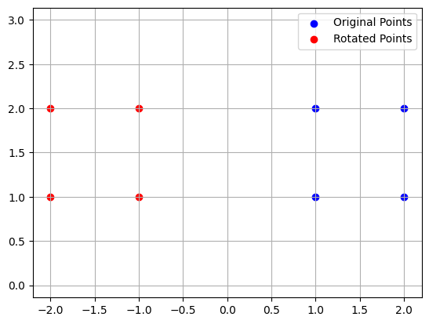
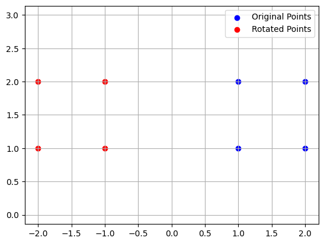
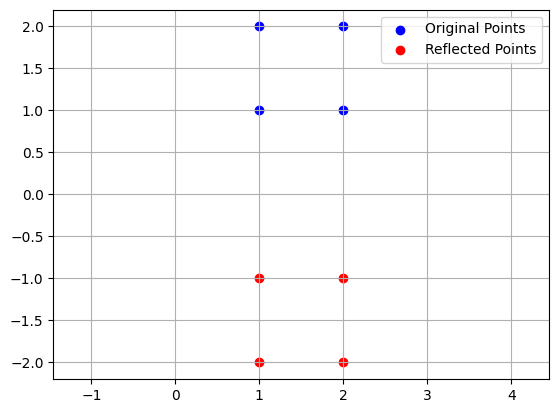

Transformasi Linier#
##Definisi Transformasi Linier
Transformasi linier adalah fungsi yang memetakan elemen-elemen pada suatu ruang vektor ke elemen-elemen pada ruang vektor lainnya, dengan mempertahankan sifat-sifat linier.
Secara matematis, jika T adalah transformasi linier dari ruang vektor U ke ruang vektor V, maka T harus memenuhi dua syarat: T(u+v) = T(u) + T(v) dan T(ku) = kT(u), untuk setiap u dan v pada U, dan setiap skalar k.
import numpy as np
# Definisikan vektor kolom sebagai array NumPy
vector = np.array([[1], [0]])
# Target vektor setelah transformasi
target_vector = np.array([[-1], [0]])
# Matriks yang akan membawa vector ke target_vector
# Dengan mempertimbangkan bahwa kita hanya tahu nilai untuk baris pertama,
# kita bisa memilih nilai apa pun untuk elemen lain yang tidak bertentangan
# dengan transformasi yang diinginkan.
# Misalnya, kita bisa memilih elemen (2,2) sebagai 1 dan elemen (2,1) sebagai 0
# untuk tidak mengubah komponen y dari vektor.
transformation_matrix = np.array([[-1, 0], [0, 1]])
# Cek apakah matriks benar-benar membawa vector ke target_vector
result_vector = transformation_matrix.dot(vector)
# Verifikasi hasil
if np.array_equal(result_vector, target_vector):
print("Matriks transformasi yang benar:")
print(transformation_matrix)
else:
print("Matriks transformasi tidak benar.")
Matriks transformasi yang benar:
[[-1 0]
[ 0 1]]
##Sifat-sifat Transformasi Linier
Transformasi linier memiliki beberapa sifat penting, yaitu:
Kekontinuan: Transformasi linier adalah fungsi kontinyu, artinya perubahan kecil pada input akan menghasilkan perubahan kecil pada output.
Kelinieran: Transformasi linier mempertahankan sifat-sifat linier, seperti sifat distributif dan sifat homogen.
Invertibilitas: Jika transformasi linier T bersifat bijektif, maka T memiliki invers yang juga merupakan transformasi linier.
##Cara mendapatkan fungsi transformasi matriks
Untuk mendapatkan fungsi transformasi matriks, kita perlu memahami bahwa setiap operasi transformasi geometri dalam ruang dua dimensi atau tiga dimensi bisa direpresentasikan sebagai perkalian matriks dengan vektor-vektor yang mewakili titik-titik dalam ruang tersebut.
Berikut adalah beberapa jenis transformasi yang umum dan matriks yang mewakilinya:
Translasi (geseran): Dalam dua dimensi, translasi titik (x, y) ke (x+t_x, y+t_y) tidak bisa direpresentasikan dalam bentuk perkalian matriks biasa karena membutuhkan afine transformation. Namun, kita bisa menggunakan homogeneous coordinates untuk mencapai ini:
[1 0 t_x] [x] [x + t_x] [0 1 t_y] [y] = [y + t_y] [0 0 1 ] [1] [ 1 ]
Rotasi: Rotasi titik-titik di sekitar asal dengan sudut θ:
[cos(θ) -sin(θ)] [x] [x*cos(θ) - y*sin(θ)] [sin(θ) cos(θ)] [y] = [x*sin(θ) + y*cos(θ)]
Skala (perbesaran/pengecilan): Skala titik-titik dengan faktor s_x dan s_y sepanjang sumbu x dan y:
[s_x 0] [x] [s_x*x] [0 s_y] [y] = [s_y*y]
Refleksi (pencerminan): Refleksi terhadap sumbu x, y, atau garis y = x:
Terhadap sumbu x:
[1 0] [x] [x] [0 -1] [y] = [-y]
Terhadap sumbu y:
[-1 0] [x] [-x] [ 0 1] [y] = [ y]
Terhadap garis y = x:
[ 0 1] [x] [y] [ 1 0] [y] = [x]
Shear (regangan): Shear paralel dengan sumbu x atau y:
Shear sepanjang sumbu x:
[1 k] [x] [x + k*y] [0 1] [y] = [ y ]
Shear sepanjang sumbu y:
[1 0] [x] [ x ] [k 1] [y] = [x + k*y]
Untuk mendapatkan fungsi transformasi matriks yang spesifik, kita perlu menentukan parameter-parameter yang relevan (misalnya, titik pusat rotasi, sudut rotasi, faktor skala, dll.) dan menggunakan matriks yang sesuai untuk merepresentasikan transformasi tersebut.
Jika kita memiliki kasus transformasi yang lebih kompleks atau gabungan dari beberapa transformasi, kita bisa menggabungkan matriks-matriks transformasi tersebut dengan melakukan perkalian matriks dalam urutan yang benar (perhatikan bahwa urutan perkalian matriks bisa memengaruhi hasil akhir).
Sebagai contoh, jika kita ingin menerapkan rotasi diikuti oleh skala, kita bisa menggunakan perkalian matriks:
M_hasil = M_skala * M_rotasi
Kemudian, untuk menerapkan transformasi ini pada titik (vektor kolom), kita bisa melakukan perkalian matriks dengan vektor tersebut:
vektor_hasil = M_hasil * vektor
perlu diingat bahwa dalam kasus transformasi yang melibatkan translasi, kita harus menggunakan homogeneous coordinates untuk memperoleh representasi matriks yang tepat.
##Rotasi dalam Transformasi Linier
Rotasi adalah transformasi linier yang memutar vektor pada suatu sudut tertentu terhadap suatu titik atau sumbu.
Jika T adalah transformasi rotasi dengan sudut θ, maka T(v) = [cos(θ) -sin(θ); sin(θ) cos(θ)]v.
Rotasi banyak digunakan dalam animasi, desain grafis, dan komputasi geometri untuk memutarkan objek pada sumbu tertentu.
Rotasi dalam transformasi linier adalah proses pemutarannya objek di sepanjang sumbu yang melalui titik pusatnya dengan jarak yang tetap dari pusat. Dalam konteks matematika, rotasi dapat direpresentasikan oleh matriks rotasi, yang digunakan untuk mengubah koordinat titik-titik dalam ruang vektor.
Untuk melakukan rotasi dalam transformasi linier di Python, kita bisa menggunakan library NumPy yang memiliki fungsi-fungsi untuk operasi matriks. Berikut adalah contoh kode Python yang melakukan rotasi 2D menggunakan matriks rotasi:
import numpy as np
import matplotlib.pyplot as plt
# Fungsi untuk membuat matriks rotasi 2D
def make_2d_rotation_matrix(theta):
c, s = np.cos(theta), np.sin(theta)
return np.array([[c, -s], [s, c]])
# Fungsi untuk melakukan rotasi pada titik-titik
def rotate_points(points, theta):
rotation_matrix = make_2d_rotation_matrix(theta)
return np.dot(rotation_matrix, points.T).T
# Fungsi untuk menggambar titik-titik
def plot_points(points, rotated_points=None):
plt.figure()
plt.grid()
plt.scatter(points[:, 0], points[:, 1], color='blue', label='Original Points')
if rotated_points is not None:
plt.scatter(rotated_points[:, 0], rotated_points[:, 1], color='red', label='Rotated Points')
plt.axis('equal')
plt.legend()
plt.show()
# Contoh penggunaan
if __name__ == "__main__":
# Membuat beberapa titik sebagai contoh
points = np.array([[1, 1], [2, 2], [1, 2], [2, 1]])
plot_points(points)
# Sudut rotasi dalam radian (misalnya, 90 derajat)
theta = np.pi / 2
# Melakukan rotasi pada titik-titik
rotated_points = rotate_points(points, theta)
# Menggambar titik-titik asli dan titik-titik yang sudah dirotasi
plot_points(points, rotated_points)
 

Kode di atas akan melakukan rotasi pada titik-titik sebesar 90 derajat (π/2 radian).
##Refleksi dalam Transformasi Linier
Salah satu jenis transformasi linier yang penting adalah refleksi.
Refleksi adalah transformasi linier yang membalikkan arah vektor pada suatu garis tertentu.
Jika T adalah transformasi refleksi terhadap garis l, maka T(v) = -v + 2(v · u)u, di mana u adalah vektor satuan pada garis l.
Refleksi dapat digunakan, misalnya, untuk membalikkan gambar atau model 3D pada sumbu tertentu.
Dalam transformasi linear, refleksi adalah operasi yang memantulkan objek melalui garis atau bidang. Dalam konteks dua dimensi, kita bisa memantulkan titik-titik melalui sumbu-x, sumbu-y, atau garis y = x.
Berikut adalah contoh kode program dalam Python yang menggunakan library NumPy untuk melakukan refleksi terhadap sumbu-x dan sumbu-y:
import numpy as np
import matplotlib.pyplot as plt
# Fungsi untuk membuat matriks refleksi terhadap sumbu X
def make_reflection_x_matrix():
return np.array([[1, 0], [0, -1]])
# Fungsi untuk membuat matriks refleksi terhadap sumbu Y
def make_reflection_y_matrix():
return np.array([[-1, 0], [0, 1]])
# Fungsi untuk melakukan refleksi pada titik-titik
def reflect_points(points, reflection_matrix):
return np.dot(reflection_matrix, points.T).T
# Fungsi untuk menggambar titik-titik
def plot_points(points, reflected_points=None):
plt.figure()
plt.grid()
plt.scatter(points[:, 0], points[:, 1], color='blue', label='Original Points')
if reflected_points is not None:
plt.scatter(reflected_points[:, 0], reflected_points[:, 1], color='red', label='Reflected Points')
plt.axis('equal')
plt.legend()
plt.show()
# Contoh penggunaan
if __name__ == "__main__":
# Membuat beberapa titik sebagai contoh
points = np.array([[1, 1], [2, 2], [1, 2], [2, 1]])
plot_points(points)
# Melakukan refleksi terhadap sumbu X
reflection_matrix_x = make_reflection_x_matrix()
reflected_points_x = reflect_points(points, reflection_matrix_x)
# Menggambar titik-titik asli dan titik-titik yang sudah direfleksikan terhadap sumbu X
plot_points(points, reflected_points_x)
# Melakukan refleksi terhadap sumbu Y
reflection_matrix_y = make_reflection_y_matrix()
reflected_points_y = reflect_points(points, reflection_matrix_y)

Kode di atas akan melakukan refleksi pada titik-titik terhadap sumbu X dan sumbu Y.
##Komposisi Transformasi Linier
Dua atau lebih transformasi linier dapat dikompositkan untuk membentuk transformasi linier baru.
Jika T dan S adalah dua transformasi linier, maka komposisi T∘S adalah transformasi linier baru yang memetakan elemen-elemen pada ruang vektor U ke elemen-elemen pada ruang vektor V.
Komposisi transformasi linier banyak digunakan dalam pemrograman, pengolahan citra, dan aljabar linier terapan.
Komposisi transformasi linier adalah operasi di mana dua atau lebih transformasi linier diterapkan secara berurutan.
Dalam konteks matriks, komposisi transformasi linier diimplementasikan sebagai perkalian matriks.
Matriks hasil dari perkalian tersebut merepresentasikan transformasi gabungan dari transformasi-transformasi yang dikomposisikan.
Berikut adalah contoh kode Python yang menggunakan library NumPy untuk melakukan komposisi transformasi linier:
import numpy as np
import matplotlib.pyplot as plt
# Fungsi untuk membuat matriks rotasi 2D
def make_2d_rotation_matrix(theta):
c, s = np.cos(theta), np.sin(theta)
return np.array([[c, -s], [s, c]])
# Fungsi untuk membuat matriks skala
def make_scaling_matrix(sx, sy):
return np.array([[sx, 0], [0, sy]])
# Fungsi untuk melakukan komposisi transformasi
def compose_transformations(transformations):
result = np.eye(2)
for transformation in transformations:
result = np.dot(transformation, result)
return result
# Fungsi untuk menggambar titik dan garis
def plot_points_and_lines(points, lines=None):
plt.figure()
plt.grid()
x, y = zip(*points)
plt.scatter(x, y, color='blue')
if lines is not None:
for line in lines:
plt.plot(*line, color='red')
plt.axis('equal')
plt.show()
# Contoh penggunaan
if __name__ == "__main__":
# Membuat beberapa titik sebagai contoh
points = np.array([[1, 1], [2, 2], [1, 2], [2, 1]])
plot_points_and_lines(points)
# Membuat transformasi yang akan diterapkan
theta = np.pi / 4 # 45 derajat dalam radian
rotation_matrix = make_2d_rotation_matrix(theta)
scaling_matrix = make_scaling_matrix(2, 2)
# Melakukan komposisi transformasi
composed_transformations = compose_transformations([rotation_matrix, scaling_matrix])
# Menerapkan transformasi komposit ke titik-titik
transformed_points = np.dot(composed_transformations, points.T).T
# Menggambar titik-titik yang sudah di-transformasi
plot_points_and_lines(transformed_points)
Kode di atas akan melakukan dua transformasi linier: rotasi sebesar 45 derajat dan skala dengan faktor 2 untuk kedua sumbu.
Kemudian, kode akan menggabungkan kedua transformasi tersebut menjadi satu transformasi komposit dan menerapkannya pada beberapa titik.
##Penerapan Transformasi Linier in real life
Transformasi linier memiliki banyak penerapan dalam dunia nyata, seperti:
Pengolahan Citra: Transformasi linier dapat digunakan untuk operasi-operasi pada citra digital, seperti rotasi, skala, refleksi, dan proyeksi.
Animasi: Dalam pembuatan animasi, transformasi linier digunakan untuk menggerakkan dan memutar objek-objek dalam adegan.
Ekonomi dan Keuangan: Transformasi linier dapat digunakan untuk menganalisis dan memodelkan data ekonomi dan keuangan, seperti analisis regresi linier.
Matematika dan Sains: Transformasi linier merupakan konsep dasar dalam aljabar linier, geometri, dan berbagai cabang matematika lainnya.